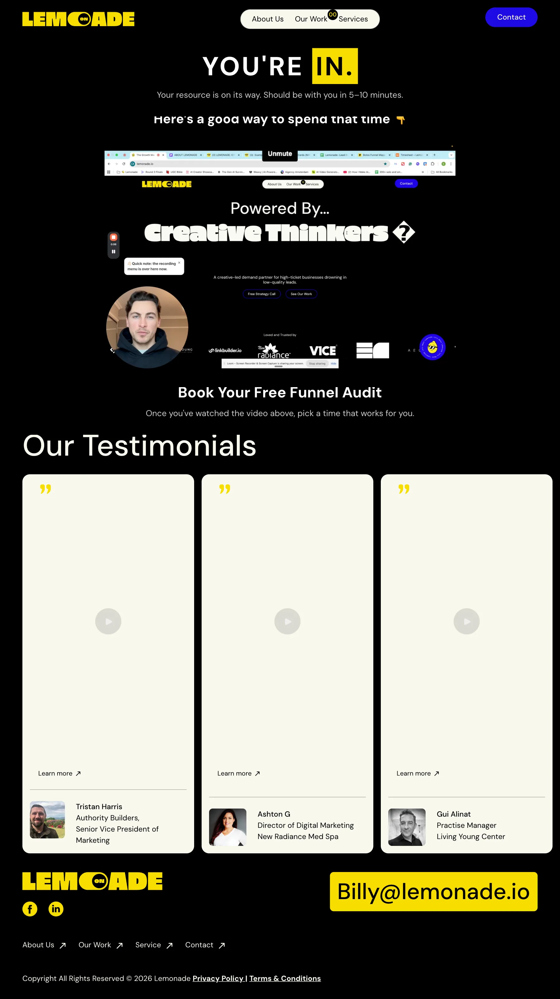

Add $15k-$50k/mo of new pipeline in 90 days.
InboundOnSteroids is a LinkedIn inbound engine that posts daily in your voice and turns the readers who engage into leads in your inbox. Effects observed in agency owners:
Symptoms commonly reported at intake.
You know LinkedIn inbound works. Posting daily, on top of running the agency, never actually happens.
You tried a ghostwriter or an agency. The posts did not sound like you, and the pipeline stayed flat.
A copywriter or content hire is $3k to $5k a month, and you still have to manage them.
So your own feed, the thing that should be selling your agency, sits quiet.
Treatment: a fully managed inbound engine, building an audience you own.
You record your voice once. We learn it from your calls, your past winners, and how you talk to clients. You approve the voice before anything ships.
We decide what to post, write it in your voice, and publish natively on your profile. Including the days you are busy. Especially those.
Every engager who fits gets the lead magnet: a gated landing page, email capture to a list you own, and a follow-up until they reply. Leads land in your inbox, not in a dashboard you will never open.
A veto. Everything ships on auto-approve, and you can pull anything before it goes out, but nothing waits on you. The calls that come back, you take. That part we cannot do for you.
One system, idea to booked call. Nothing in it waits on you.
A founder posting by hand plateaus, because writing stops the moment clients get loud. A machine does not have loud weeks.
Daily volume compounds: more shots at resonance, more readers, more engagement routed to capture, more booked calls. And the loop closes on itself: real performance feeds back in, so the engine sharpens what it posts next.
Inbound taken past what a person doing it by hand can produce, because a machine runs it every day.
What the engine does that a prompt box or a ghostwriter cannot.
It pulls ideas from your calls, the web, and your past winners, then ranks them by what will land.
Trained on your voice and built on your real conversations, so every post reads like you wrote it.
Every draft clears a taste gate before it ships, rewritten until it reads like you wrote it on a good day.
It publishes to LinkedIn, builds the lead magnets, works every engager who fits with the resource and a follow-up until they reply, and learns from what performs. All of it, without you in the loop.
Real work the engine has published, shown in the format it ships. The post and the lead magnet are live; the carousel is a representative slide in the shipped style.
Last week a multi-service agency owner told me he posts every week. I asked what happens after someone reads one.
"I'm not formally doing that today."
I knew that answer, because it used to be mine.
For most of a year I posted three, four times a week. Reach was fine. I told myself the audience was the asset.
Not one of those posts caught a single email. Someone read, maybe nodded, then scrolled straight back into the feed. I was renting attention four seconds at a time and handing every reader back to LinkedIn.
Posting without a capture layer is just brand awareness you're paying for in founder hours.
You never see the leads you let go.
So I built the half I'd skipped: something worth trading an email for, one click off every post that lands.
The feed was always the demo. I just never built the part that catches the name.
A post the engine wrote and shipped on the founder's own feed. Yours run daily, in your voice, published native on your profile.
Representative slide, style as shipped. Nine on-brand carousel styles run through the engine. The cover carries the promise; the deck delivers it.
A live lead magnet the engine built and published, running now at resources.ivanmanfredi.com. Yours ship as live pages at your domain, every signup captured onto a list you own.
What the first 90 days look like, and what keeps it running after. Results vary with your offer and market.
We learn your voice from one call, you approve it, and your first post goes live on your profile. It replaces the $3k to $5k a month content hire and the $300 to $650 a month of tools you would otherwise wire together yourself.
A post has gone out every working day for a month. Your first lead magnet is live at your domain, and every reader who fits has had a message and a follow-up.
By day 90, agency owners we run this for see $15k to $50k a month of new pipeline.
The engine keeps moving with LinkedIn, the models, and what your market is watching, so the content keeps landing without you touching it. The audience, the list, and the named leads are yours, and they compound.
Running now for 20+ agency founders and operators. Two of them, in their own numbers.

We run Kyle's content and lead magnets end to end. Every post and every guide is drafted in his voice and shipped on a live page, and he never faces a blank one.

We point the lead-magnet engine at one job for Lemonade: booking fit calls. Gated assets on live pages qualify every signup and route the best straight to the calendar.
The operator who runs your engine, in the words of the people he has built systems for.
“Quality work and lightning fast. Would rehire him again without any doubt.”
Michel de Wachter BNP Paribas Fortis
“We had a Slack alert system and a CRM that weren't talking to each other. Ivan wired the whole thing together.”
Camille Haas Head of Operations
“He found three gaps in our Make.com setup we didn't know existed. Two of them were costing us real pipeline.”
Rodrigo Ibañez Managing Director
“Rebuilt our whole backend architecture and wrote documentation that my team could actually follow. Solid work.”
Henrik Sund CTO

More than a hundred systems built. The engine runs on his own profile first: the daily posts, the lead magnet, the audience compounding, all of it visible live on his feed. The proof precedes the pitch.
See it running on our own feedYes. We train the voice from a short intake, on your calls and your past winners, and nothing ships until it reads like you wrote it.
Intake takes the first week. Daily publishing begins as soon as you approve the voice, typically inside week two.
Everything. The profile is yours, the audience is yours, the email list is yours, the lead magnet is yours. If we part ways, all of it stays with you.
Less than the $3k to $5k a copywriter or content hire runs, with nobody to manage. Exact terms on the fit call.
Record your voice once. From there it runs on auto-approve: you can veto anything before it ships, but nothing needs you. Your part is taking the calls that come back.
A ghostwriter writes posts. The engine decides what to post, writes in your trained voice, refuses to ship slop, runs the lead magnet funnel, follows up with engagers, and learns from what performs. And there is nobody to manage.
The fit call exists to find that out before money moves. If your agency is not indicated, we say so on the call.
One fit call determines whether your agency is indicated. Free, one hour, with the operator who would run your engine. Want to watch it run on your brand before you decide? Same call.
Book the free fit callOne dose of what the engine built this week, and what it changed. Weekly, for agency owners.